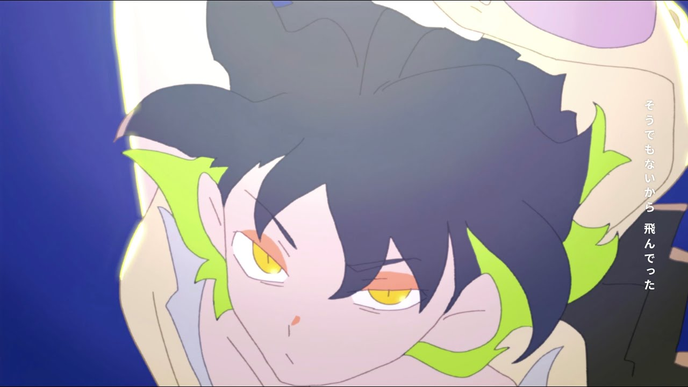
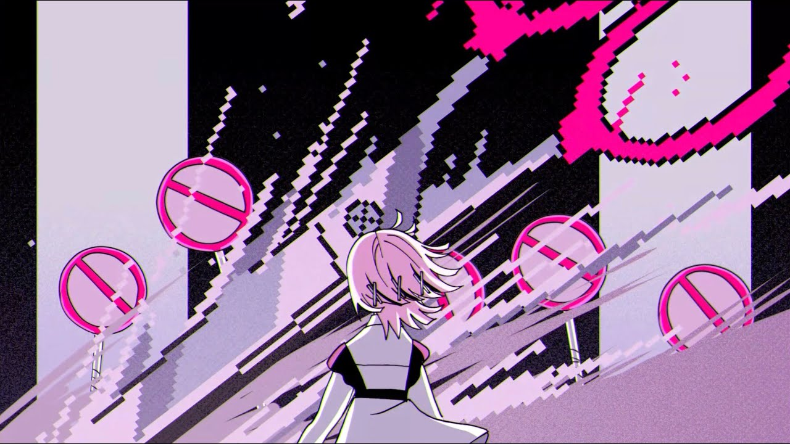

ずっと真夜中でいいのに。
ずっと真夜中でいいのに。とは？
「ずっと真夜中でいいのに。」は2018年に突如現れたアーティスト。通称「ずとまよ」
YouTubeで「秒針を噛む」公開以降、爆発的に成長している。
その再生数は2021年9月に1億回を突破した。
そんなずとまよだが、ボーカルの「ACAね」以外のメンバーは公表されていない。
このサイトでは、謎多きずとまよの魅力に迫っていく。
ずっと真夜中でいいのに。の魅力
ずとまよの魅力は、ACAねさんの歌声とMVが作り出す独特の世界観だろう。
アップテンポな曲調、前衛的な歌詞、透き通るハイトーンボイス、躍動感のあるMV、全てが素晴らしい。
独特な言い回しの不思議な歌詞は聴いていて飽きない。
聴いているうちに、ACAねさんはどんな人なんだろう、この歌詞はどういう意味なんだろう、
そんなことを考えるようになった。でも、教えてくれない。だからもっと気になって僕はずとまよに熱中していった。
そんなずとまよのおすすめの曲をいくつか紹介していこうと思う。
お勉強しといてよ

「お勉強しといてよ」は、カッコよくて癖になるメロディと、可愛らしいけど迫力のあるMVで思わず
繰り返し聴いてしまう。特に、２番のサビが終わってからの間奏がお洒落でカッコいいのでぜひ聴いてみて欲しい。
あいつら全員同窓会
「あいつら全員同窓会」は、歌詞が現代的で面白い。１番が終わった後の
三連符が多く使用された間奏、最後のラップパートはカッコよく、中毒性がある。
ばかじゃないのに
「ばかじゃないのに」は、ずとまよでは珍しい、恋心を真っ直ぐ歌詞にした曲だ。
溢れ出る気持ちと切なさが表現されている。MVも可愛いのでおすすめだ。
最後に
今回は、ずとまよの魅力と曲を紹介した。
まだまだ謎に包まれたアーティストだが、だからこそ僕たちは熱狂し続ける。
その中毒性のある独特の世界観を体感してみてほしい。
これからも「ずっと真夜中でいいのに。」の活躍に目が離せない。